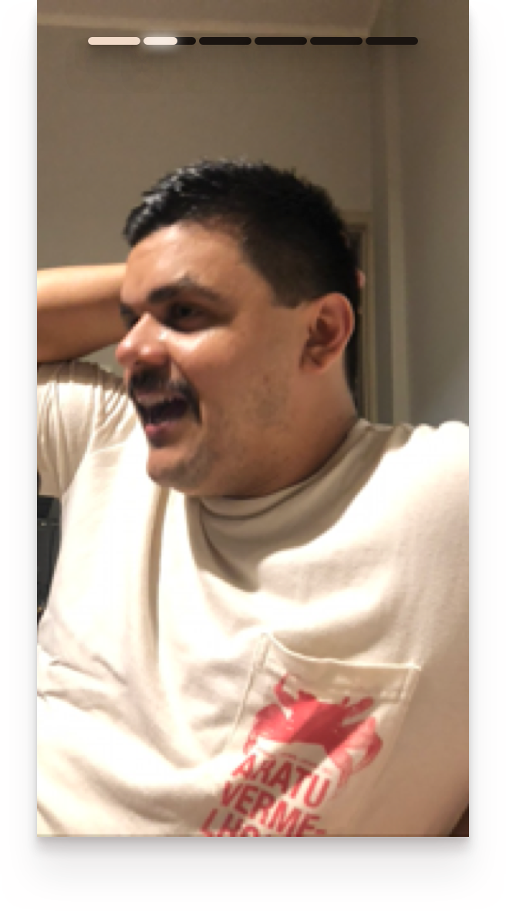

Elaboro projetos de interface gráfica do usuário desde 2005. O design de software, naturalmente, se tornou grande parte da minha vida. Produtos que desenhei tiveram alcance de 50 milhões de consumidores. Também aprendi que o celular é um bonsai de computador; que apps são diferentes da web por um bom motivo; e que isso torna a web tão mais fascinante.
